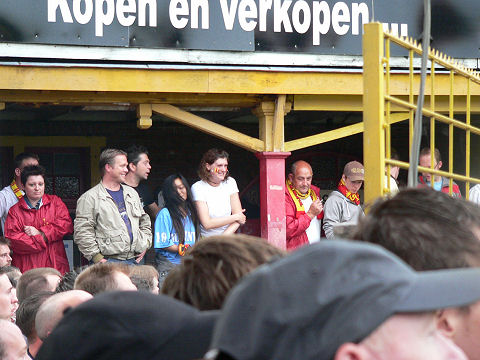

|
Sfeerreportage promotiefeest KV Mechelen
|
KV Mechelen had de promotie naar de eerste klasse al veilig gesteld. De wedstrijd
tegen Lierse was daarom een formaliteit of beter gezegd, een gala-wedstrijd.
De sfeer in het overbezette stadion was van grote klasse. Maar ook in het veld
was
er genoeg te beleven.
Malinwa speelde de bezoekers driekwart van de
wedstrijd volledig zoek in een vrij
energieke wedstrijd. Bert Dhont (nummer 6) speelde zijn afscheidswedstijd en
kreeg
in de tweede helft een publiekswissel.
In de 17e min. scoort Jonas Ivens 1-0.
Een van de vele verre inworpen van Bjorn Vleminckx.
Na Roda JC is het nooit meer wat geworden met Bob Peeters.

Drukte bij het Chalet.
De jongeman in het midden mocht de aftrap verrichten.
Olivier Werner hoefde zich niet echt in te spannen maar stond goed als het
moest.
Na precies een uur is het 2-0 door een doelpunt van Issame Charaï.
De ontlading in vak G, achter het doel, na het laatste fluitsignaal.
Dan volgt er een lange huldigingsceremonie.
Mooie pure emotionele interacties tussen spelers en publiek en dat van heel
dichtbij.
De buren uit Lier die dus nu naar de tweede klasse degraderen.
In de kantine met zowaar een aantal Rodasupporters.
Buiten was het enorm druk.
Een van de weinige plaatsen waar nog ruimte was...
Deze dames hebben zojuist hun knuffelsessie beëindigd.
Buiten was het druk, veel te druk!
Er was ook een band: Frituur Paula...
© Koempels Pleasure Dome
|